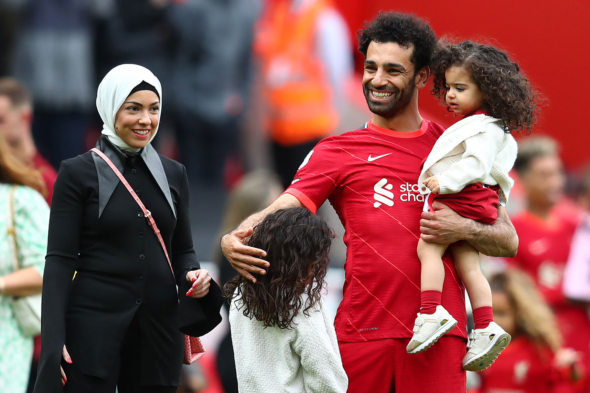

|  |
| MOHAMED SALAH DAN KELUARGA
Istri Serta Dua Buah Hatinya |
Pemain sepak bola asal Mesir Mohamed Salah kerap kali menjadi pusat perhatian khalayak karena performanya yang gemilang di berbagai kesempatan laga sepak bola,
baik klub maupun negara. Maka tak heran, bila keseharian lelaki yang kerap dipanggil Salah jadi sorotan. Terkenal karena kelengkapan kemampuan sebagai penyerang samping di Liverpool,
Salah memang tumbuh besar dalam keluarga yang senang berolahraga.
Dia juga sudah memiliki bahtera rumah tangganya sendiri. Mohamed Salah menikah dengan perempuan bernama Magi pada tahun 2013. Keduanya telah dikaruniai dua orang anak perempuan bernama Makka dan Kayan.
Mohamed Salah dan keluarga selalu terlihat harmonis, bahkan terbebas dari kabar miring maupun gosip tak sedap.
Sebagai pemain sepak bola top, Mohamed Salah punya banyak penggemar dan pergaulan di level atas. Akan tetapi, hal tersebut tidak membuat hati Mohamed Salah membuka tempat bagi orang lain. Mohamad Salah setia pada kekasihnya Magi. Menariknya, ketika melangsungkan pernikahan dengan Magi, Mohamed Salah mengundang seluruh warga di desanya untuk hadir. Mohamed Salah juga turut mengundang para penyanyi dari Mesir untuk memberi hiburan.
Pernikahan ini menunjukkan betapa hatinya terbuka untuk menyambut orang terdekatnya dan membuka pintu bagi para penggemarnya untuk hadir alih-alih menggelar penikahan yang eksklusif.